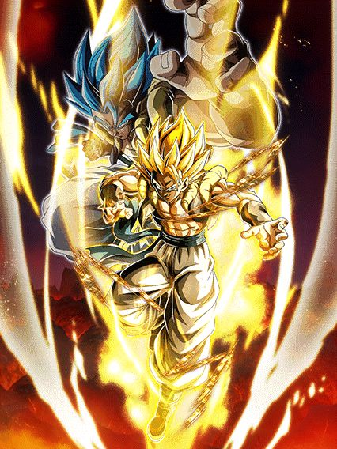
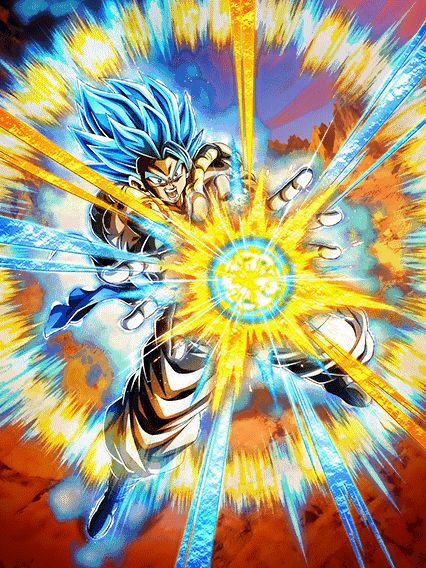
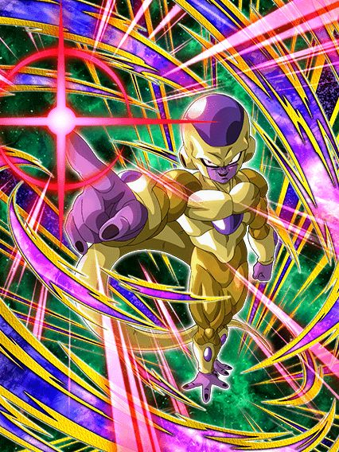

O cara é praticamente intocável e ainda sim stacka DEF, goat.
O Gogeta é um card "faz-tudo", ele tem todas as mecânicas de hidden potential e ainda é um orb changer lendário, que personagem incrível
Pra começar, o Gogeta é um líder de 200% pra Movie Heroes, então o cara é brabo mesmo
E por sinal, o Gogeta tem defesa ativa por 3 turnos pra ajudar ele no começo da luta, o que já é ótimo
Ele stacka 30% de DEF no Ultra Super Attack, mas como eu disse, ele tem muito desvio transformado, fica meio desnecessário o stack
E esse cara também é efetivo contra tudo permanentemente, o que ajuda muito o dano dele
Bom, o Gogeta muda aleatoriamente orbs que não sejam PHY pra rainbow, o que é maravilhoso já que ele não sofre por Ki, então o time inteiro se beneficia disso
Ele lança um adicional com 70% de ser um Super Attack, e precisando pegar só um único rainbow orb, ele lança um Super Attack adicional garantido também
Com esses adicionais e o hidden potential, o Gogeta pode dar 4 supers num turno e cada super aumenta o ATK e DEF em 50% no turno, então ele com certeza não vai tomar muito dano nesse começo de luta
Bom, de início, é só isso, o Gogeta é bem simples, ele vai ficar tranquilo até o turno onde ele se transforma
E falando em transformação.. essa deu medo
O Gogeta se transforma a partir do turno 4, mas não do turno 4 da luta e sim o quarto turno dele (é similar a condição do Vegetto Blue AGL, mas sem a condição de HP podre junto)
Não é uma condição ruim não, já que é só dar float nele no turno q ele aparecer e quando ele voltar, pronto, ele já pode transformar
Como a defesa ativa dele acaba depois de 3 turnos, é bem arriscado ficar stackando mais, até pq não faz tanta diferença, então só transforme assim que puder

O segundo Mr. Dokkan Original, mas melhor, e em pessoa.
O Gogeta mantém algumas coisas que ele já tinha, como o orb change e ser efetivo contra tudo, só que ser efetivo vai ser inútil daqui um momentinho..
Agora o Gogeta lança 1 super adicional garantido e lança outro pegando 1 rainbow orb, bem balanceado isso aí
Mas as grandes mecânicas do Gogeta é que por 4 turnos ele cura 54% de HP (pq sim, nem tem motivo pra isso), e ter 70% de chance de desvio, que obviamente faz dele um personagem quebrado considerando o tanto de coisa que ele já faz
E agora o dano do Gogeta fica absurdo, já que cada desvio que ele fizer dá 20% de chance de crítico, e essa chance não tem limite, então o Gogeta dá crítico garantido infinito depois de desviar 5 vezes
Ah, por sinal, esse cara tem um Ultra Super Attack com animação original e que aumenta 100% de ATK por 4 turnos, então o dano já é alto no primeiro turno dele, e no turno seguinte, fica ainda mais absurdo
E se tudo isso não parece suficiente, tem mais.
O Gogeta tem a nova mecânica de atração de ataques na Active Skill dele, e mlk, que Active desbalanceada
O Gogeta dá um dano do caramba no inimigo (provavelmente vai ser crítico), atraí TODOS os ataques no turno pra ele e desvia garantido, personagem desbalanceado demais cara
Essa Active skill basicamente impede o boss de fazer qualquer coisa, mas tem alguns limites
- Ataques em área ignoram essa atração, eles ainda vão pegar no time inteiro
- O Gogeta é um personagem de desvio, se o boss nulificar desvio, o Gogeta vai atrar todos os ataques pra si e morrer né, toma cuidado
Obviamente essas limitações não impedem o Gogeta de ser um top tier facilmente, e ele realmente é um card genial
OSTs incríveis, Kit muito forte e fácil de entender, protege o time, e animações lindas
E quer saber de uma coisa? Esse cara tem 70% de chance de counterar supers de Ki e..
RAAAAAAHHHH MUDADA!! 🦅🦅🦅🦅🦅🦅🦅🦅
BROLY FULL POWER
O N.1 por 2 semanas, mas ainda assim, o N.1.
O Broly é simplesmente uma máquina de dano e defesa, o cara tem vários adicionais e stacka ainda.. só vai se ligando..
Pra começar, ele tem defesa ativa permanente, então ele já tem a capacidade de tankar bem
Ele também é lider pra Super Bosses, mil vezes melhor que o Goku Black Rosé PH-
Falando dos Super Attacks dele, ele stacka 50% de ATK pra sempre e ganha 30% de DEF por 4 turnos no Ultra Super Attack, e no Super Attack normal, stacka 30% de ATK e ganha 30% de DEF no turno, o que faz dele um card bem similar aos GT Boys do ano passado, já que eles focavam bastante no ATK
Bom, o Broly tem a animação de intro mais pesada do jogo inteiro (demora um 5 segundos pra carregar o negócioKKKKK) e por 4 turnos lança um Super Attack adicional garantido
Não só isso, mas caso ele estiver no slot 1 ou 2, ele lança outro Super Attack adicional, e caso ele esteja no slot 3, ele lança um Super Attack adicional e outro adicional com 50% de chance de ser um Super Attack
Então é, o foco dele é dar o máximo de supers possível e stackar muito
Algo que eu prefiro muito mais nesse cara é que ele é muito mais confiável que os GT Boys por exemplo, já que ele tem muito mais coisas garantidas sem nenhuma condição de Ki, o que é ótimo
E a forma base dele é basicamente só isso, ele dá muito dano e, graças a defesa ativa, consegue tankar bem de boa
Agora vem a transformação dele.. hmm..
Bom, o Broly tem a condição de transformação meio podre infelizmente, já que ele pode se transformar a partir do turno 5, mas é o quinto turno dele e não o quinto turno da batalha, e diferente do Gogeta, não dá pra só dar float nele e no turno seguinte já transformar
Infelizmente leva um tempinho pro monstro sair, até pq algumas vezes as lutas acabam antes do Broly ter a chance de se transformar
Mas caso ele consiga..
Pode fazer uma pausa, tomar um café, fazer uma caminhada, dar uma volta na cidade toda, e esse cara ainda vai estar mandando adicionais..
Antes de falar qualquer coisa sobre o kit desbalanceado desse cara, tenho que mencionar que, ao se transformar o Broly cria um domínio muito forte por 4 turnos, dando 4 de Ki e 10% de ATK e DEF pra aliados e inimigos Extreme Class, e mais 10% caso eles sejam Movie Bosses ou Exploding Rage
Pra completar, enquanto o domínio estiver ativo, o Broly ganha 26% de redução de dano antes de atacar, e aliados e inimigos Super Class recebem 10% de dano a mais
Então é, o cara buffa muito o time, é provavelmente o domínio mais forte do jogo (no Global né), com uma das melhores OSTs do jogo inteiro
A OST do cara começa como a de um vilão, mas muda de tema logo depois já que o Broly não é do mal
E o som do Ki carregando de fundo é genial, simplesmente peak.
Falando sobre o próprio Broly, ele vira uma verdadeira máquina de dano e acabou
O cara vai meter um Ultra Super Attack de 25 milhões, e logo depois vai mandar um Super adicional garantido, e caso cê esteja com 24 de Ki, ele lança outro Super adicional, e ele vai lançar mais outro Super adicional de graça, será que é suficiente?
Só pra constar, no Ultra Super Attack ele ganha 26% de chance de crítico, e no Super Attack normal ele ganha mais 26%, então o cara vai dar um dano absurdo, critando, e tendo uma defesa muito braba
O Broly tem a mecânica de ganhar 50% de DEF multiplicativa quando ele for receber um ataque, então a defesa dele antes de atacar é ok, e depois de atacar 300 vezes, ele vira uma parede, já que ele continua com defesa ativa
É basicamente isso, o Broly é decente na forma base, mas transformado ele se torna um monstro, o cara é o mais puro dano e destruição
Quer um fato curioso? Esse cara compartilha 5/7 links com o Goku SSJ4 INT LR, use essa informação como preferir.
GOLDEN FREEZA INT

UM PERSONAGEM SECUNDÁRIO DE ANIVERSÁRIO BOM?????? COMO ASSIM?????????
O Freeza é um tank e suporte pra Super Bosses, e que suporte incrível mlk
Pra começar, levando ou desviando de 1 golpe o cara dá crítico garantido já, e isso é o começo
No turno 1 o Freeza simplesmente tem 60% de redução de dano, e nos turnos seguintes, ela vai ficando um pouco restrita..
No turno seguinte, a redução cai pra 50% e só fica disponível se ele pegar 3 orbs, o que é aceitável
Após isso, a redução cai pra 40% com 3 orbs pegos, e não diminui depois disso, então pelo menos ele não vira farofa depois de um tempo igual ao Golden Freeza LR
E caso todos aliados no turno sejam Super Bosses, ele ganha 20% de redução de dano em cima de tudo já mencionado, então ele realmente é uma parede
Normalmente só redução de dano pura não é tão boa, mas esse cara pelo menos consegue manter a redução dele alta, e por ser um vilão e ter o papel de ser um floater, esse cara não vai estar tanto nos turnos, então você não vai acabar ficando maluco por causa dos orbs dele e etc
Enfim, ele dá 60% de ATK e 30% de DEF pra Super Bosses, então o cara realmente é a ajuda perfeita pro time do Broly
Quem diria né? Ainda me surpreende que até os personagens secundários do aniversário tiveram atenção dessa vez


")